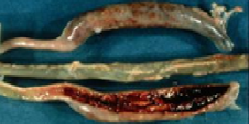

Coccidiosis
Coccidiosis is one of the most important diseases of poultry worldwide which is characterized by enteritis. Birds of any days may be susceptible to Coccidiosis.
Eimeria spp
- Sudden increase in poultry mortality
- Presence of bloody diarrhea or soft mucoid feces are diagnostic
- Presence of blood in Ceca
- Erosion presence in intestine
- Bloody feces

- Coxitril-Vet Liquid-28ml/100kg of bird for once in 02 days only/Coctreat-EP powder-1 gm/litre for 3-5 days
- Moxacil-Vet-1gm/liter water for consecutive 3-5 days
- K-10- 1gm/5liter water for 3-5 consecutive days
- Cevit-Vet powder-1gm/ 3 liter water for twice daily for 3-5 days.
- B-Com-Vit liquid- 1ml/litre for 5 days Or, as directed by the Registered Veterinary Physician